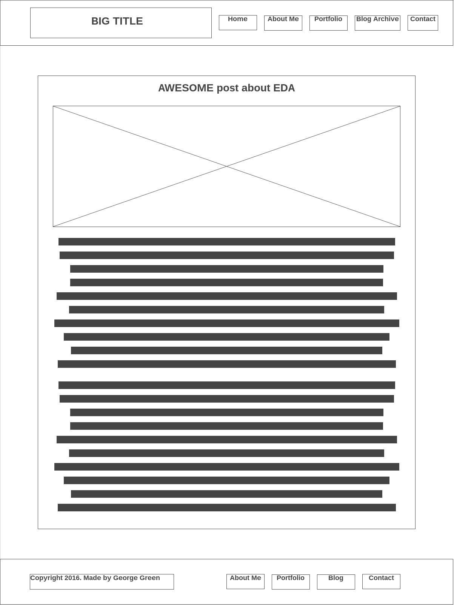
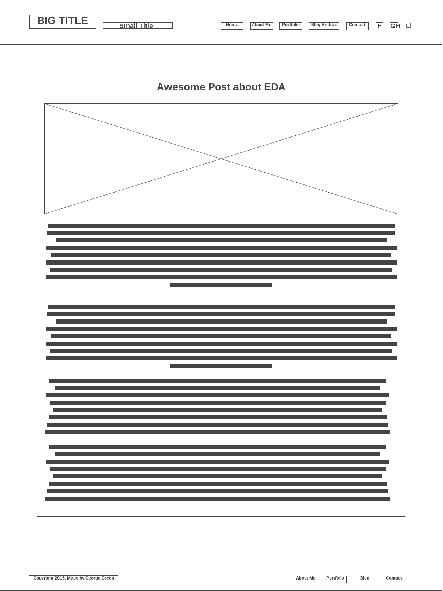

Coding the Mind

Technical Blog Part 3
What is a responsive website, and why is it important?
A responsive website is a site that is designed with cross-device usability in mind. As an example, a responsive website might resize its content as needed to accommodate a small screen size such as that of a smartphone. The website’s buttons may also resize as well.
What is Mobile first design, and why is it important?
Mobile first design is when a developer designs a website for a mobile perspective, first and foremost. This is the preferred way of making a responsive website, as it is much easier to adjust than making a computer first one.
This minimizes frustration for both developers and mobile users, whose devices often aren’t powerful enough to render demanding websites.
What are frameworks, and what are their pros and cons?
A framework is a package/add-on that comes with an assortment of standardized code, which allows a developer to more easily construct a website than building everything from scratch. These packages vary in size and in their objectives. For example, this website was built with the Skeleton framework, which is a fairly minimalistic. There are many others, such as Bootstrap, Django, etc. Some of the larger frameworks may act as an extension – they can give you features that you wouldn’t be able to get on your own.
Pros of using a framework:
- They can allow you to quickly get started with a website
- They can offer a lot of powerful features, with many frameworks to choose from
- More accessible for a development novice
Cons of using a framework:
- Each framework must be learned individually
- Each framework locks you into using that framework's style/features
- A framework could add a lot of potentially unnecessary code
What is a wireframe, and why do we use them?
A wireframe is a way of planning out a website in the beginning stages. It is a plan written usually on a grid, with 12 columns being the norm. Content is then written onto the wireframe, such as header, image, nav, etc. You can see my wireframe’s used for this website below. They were made with a web program.
Blog Page Mobile 
Blog Page Desktop 
What aspects of your wireframes did you find difficult to implement, and why?
I found adding the menu initially difficult, as I couldn’t wrap my head around the grid system with skeleton. To my absolute joy, it eventually clicked!
I also found adding hot linked icons a challenge, and I have left them for now. I didn’t have time to add them, but I may well do later.